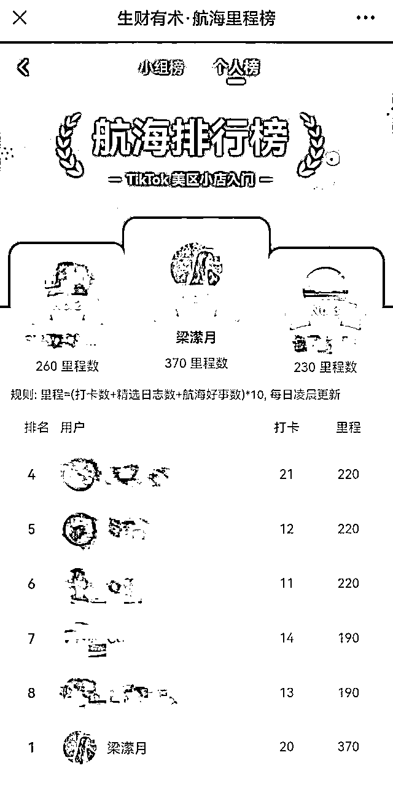

来源：https://fjk40ks7zj.feishu.cn/docx/KKFZdidbuoLdVuxJF24clm9mnqd
大家好，我是梁潆月，主业是TikTok运营，副业做健康管理。我来自广西，目前在深圳工作。2021年大学毕业前我加入了生财，一直默默学习了很多大佬的经验。去年鱼丸邀请我分享TikTok的经验，今年我终于在美区市场算是自己从0到1跑通了。所以我写下这篇文章作为复盘，分享我在TikTok美区小店的运营经验，希望对大家有所帮助。
我是广西人，去了黑龙江读大学，大学学的日语专业。大学时和班里的同学做过日语的公众号,大四时做过小红书的代写。
2021年大学毕业后我就来到深圳工作，刚毕业是给一位微博百万大V做助理，当时我一个人从0做抖音，之前我也不会剪视频，全部从0学习。做的抖音账号第一个视频就涨了3K+的粉丝，两个月时间，账号做了4万粉丝。这段经历让我学到了很多宝贵的技能，也为我后来在TikTok上的成果打下了坚实的基础。
2022年中，我从那位老板的公司离开，面试了两个月后，陷入了迷茫的状态。意识到国内太卷了！于是，我萌生了转战TikTok的念头，然后入职到一家跨境电商公司。
在这家公司，我负责东南亚市场，一个人管理4个店铺，包括1个跨境店和3个本土店（分别在马来西亚、菲律宾和泰国）。在泰国市场，我合作了一位优秀的达人，她的一个视频竟然为我们带来了上千单的销量。这让我看到了TikTok在跨境电商中的巨大潜力。
2023年9月，我开始接触美国市场，当时主要负责红人合作。
2024年3月，我加入了现在的公司，开始独自负责TK美国小店的运营。在这个过程中，我参加了生财组织的TK美国小店航海，每天跟着打卡。自从加入生财以来，我参加过十几次航海，从没想到自己会登上榜1。我真的很惊喜，也很感谢生财组织的航海，让我有机会不断挑战和提升自己！

第一个月参加TK航海21天里出单了85单，
第二个月是出了100+单，
第三个月出了800+单，有个达人给我带了400+单。我们主推产品是小众赛道的产品，客单价在40美金左右。
店铺处于初级阶段，应该先大量建联达人，我第一个月最开始的订单90%来自达人的视频。最开始合作的4个达人都收到样品就马上拍视频了，这4个达人里3个达人出了单，其中2个达人前后总共各出单了五六十单。也是刚好运气好，合作的这些达人都比较垂直。后来大出单的达人也是垂直达人。
在建联达人前，应该做好准备工作（做表格）：
我总结的公式： 开头一两句比较吸引眼球的话（加字幕）+产品卖点+结尾一定要引导大家去下单
不少爆款视频都符合航海手册里说的TK电商短视频的组合逻辑，特别是 视频开头先展示痛点+展示产品的外观与样式+产品使用+效果
虽然开始我是卖公司原有的产品，但是也在不断看自己店铺类目可以卖的产品。测品我买了资料店，上了一些看好的品。
后面确定在店铺卖的品是我刷TIKTOK，刷到了一个爆款视频。这个品，他们没有在TK上开店卖，有自己的独立站，独立站卖四五十美金一个。
我去1688看价格，成本只需要30+，我在1688看了同类型的品的供应商，然后备了货运去海外仓，没想到上架没几天，都没找达人推广，自然流+投商品卡就卖完了。
这个选品方法是之前跟文哥（郭晓文）做视频号时学的，一定要刷TK，看到流量好的品，去跟品。
反思这次做的不好的就是一开始备货太少了，在我断货期间，我刷到的那个账号，他们迅速开了TK本土店，一个视频就卖了几百单。他们还来私信我说让我下架，要告我侵权，后来我们问了供应商和查了美国专利，他们只是来恐吓我而已。
建联达人的话，推荐使用批量建联工具,前期先广撒网，得到回复后再筛选是否合作。合作的达人如果也做直播的话，和他们沟通让他们直播的时候顺便卖我们的产品。
关于合作达人，粉丝量不是最重要的
关于投流，我也是从0开始的，自己摸索了2个月后，投流ROAS从2到9（最好时），也算是一个小进步吧，当时看到这个数据还是挺开心的～
2024年上半年主要还是短视频+投流。投流的素材很关键，我的这个成果也有一定的运气成分。
开始我只投流出单达人的视频，一个广告系列设置3-5个广告组，每个广告组设置1~3个广告。广告系列设置$50的预算，投三天，跑不起来的广告组关掉。如果达人的视频拍的确实好（卖点完整、场景展示），我会考虑给他开在新的广告系列设置新的广告组再测试。
已经出单的达人广告，可以再复制新的广告系列去跑，它也会同时出单。
每天看新上线视频，自然流过千的视频尽快拿到AD Code投流。
决定广告效果的核心因素：
eCPM=预估点击率*预估转化率*Bid(出价）*1000
点击率和转化率受创意和受众影响
后来我也投PSA商品卡，投商品卡放不了量，但是也能带来一些订单。
商品卡投放比较简单：确认投放人群——确认出价方式及预算——确认投放的商品
投商品卡,推荐体验分和评论listing都做得好再投。如果是投新链接，可以设置低一点的价格（算好成本）再投流，优化目标投付费数，可能会带来动销。投流的时间选此刻，一开始每天预算$10。
原本已经出单的链接，没有差评的推荐投商品卡。
以上。希望我的经验和分享能够对大家有所帮助。感谢生财、感谢以往航海期间的教练们和志愿者们，感谢SKY老思平时的分享！
最后，感谢大家的阅读，也欢迎大家与我交流，共同探讨TikTok的更多可能性。祝大家在TikTok市场的道路上越来越顺利，一起生财有术！